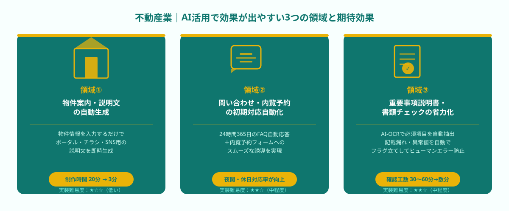
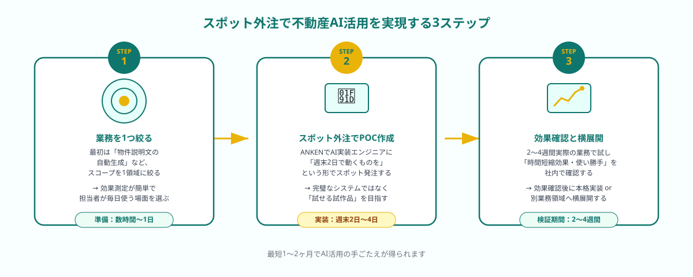

不動産業でAI活用が進まない3つの理由
不動産業界ではDXの必要性は広く認識されているものの、AI活用の実装が進まない会社が多いのが現状です。その背景には3つの典型的な課題があります。
①社内にエンジニアがいない：中小・中堅の不動産会社の多くは、IT専任担当者すら置いていないケースが珍しくありません。「AIを導入したいが、誰に頼めばいいかわからない」という状態が続きます。
②大手ベンダーへの発注ハードルが高い：SIerや大手ITベンダーへの相談は、ヒアリング→提案→見積りという流れだけで数ヶ月かかることも多く、「試してみたい」という段階には合いません。初期費用が高額になりやすい点も課題です。
③「何から始めればいいか」がわからない：AI活用の情報は飛び交っていますが、「自社の業務のどこにAIを組み込むべきか」という具体的な優先順位がつけられず、結局手が止まってしまいます。
スポット外注を活用することで、これらの課題をすべて解消できます。社内にエンジニアがいなくても、タスク単位・短期間で実装を依頼でき、小さく始めて効果を確認しながら拡張できるからです。
不動産業のAI活用で効果が出やすい3つの領域
不動産業の業務フローを整理すると、AIを組み込んで即効性が高い領域は大きく3つに絞られます。まずはこの3領域に集中することで、投資対効果を最大化できます。

領域①：物件案内・物件説明文の自動生成——物件情報（間取り・築年数・最寄り駅・設備等）を入力すると、紙チラシ・ポータルサイト・SNS投稿用に最適化した物件説明文を自動で生成します。担当者ごとの文章品質のばらつきをなくし、1件あたりの制作時間を大幅に短縮できます。実装難易度が低く、ChatGPT APIを使った簡単なWebフォームで実現可能です。
領域②：問い合わせ・内覧予約の初期対応チャットボット——Webサイトやポータルサイトからの問い合わせに対し、よくある質問（物件の空き状況・内覧手続き・周辺環境等）を24時間自動で回答します。担当者への引き継ぎも、チャットボットが収集した情報をまとめて渡すことで、電話折り返し・メール確認の手間を減らせます。
領域③：重要事項説明書・契約書類の確認支援——不動産取引は書類量が多く、確認作業に時間がかかります。AI-OCRと自然言語処理を組み合わせることで、書類の必須項目（面積・築年数・特約等）を自動で抽出・チェックし、記載漏れや異常値をフラグ立てできます。ヒューマンエラーの防止と確認工数の削減が同時に実現できます。
スポット外注でAI活用を実現する3ステップ
では、具体的にどのようなステップでスポット外注を活用すればよいでしょうか。以下の3ステップが、不動産会社がAI活用を素早く始めるための実践的な流れです。

- STEP 1：「どの業務を最初にAI化するか」を1つ決める
- STEP 2：ANKENでAI実装エンジニアにスポット依頼（POCから始める）
- STEP 3：効果を確認しながら他の業務へ横展開する
STEP 1：業務を1つ絞る。「まず物件説明文の自動生成から始める」というように、実装する領域を1つに絞ることが重要です。スコープが広いほど発注・実装・検証に時間がかかります。効果が測定しやすく、担当者が日常業務で毎日使う場面があるものを選ぶのがコツです。上記3領域でいえば、実装難易度が最も低い「物件説明文の自動生成」が、最初のステップとして最も取り組みやすい選択肢です。
STEP 2：スポット発注でPOCを作る。ANKENなどのマッチングサービスを通じて、AI実装の経験があるエンジニアに「まず動くものを土日2日で作ってほしい」という形で依頼します。完璧なシステムを一気に作るのではなく、「社内担当者が実際に試せる試作品（POC）を週末スポットで作る」というアプローチが、費用を抑えながら早期に効果を確認するための最短経路です。
STEP 3：効果確認と横展開。試作品を実際の業務で2〜4週間試し、「担当者の反応はどうか」「実際にどのくらい時間が短縮できたか」を測定します。効果が確認できたら、同じエンジニアに本格実装を依頼するか、または別の業務領域に同じアプローチで展開します。スポット外注は1人のエンジニアと継続的にかかわることもできるため、自社の業務を理解したまま次の依頼へ進めるのが利点です。
不動産業のスポット外注AI事例3選
ANKENを通じた不動産業向けのスポット外注案件の傾向をもとに、具体的な事例イメージを紹介します（プライバシー保護のため一般化しています）。
事例①：物件説明文自動生成ツール（土日2日／予算8万円）
賃貸仲介会社が「物件情報を入れるとポータル掲載用の説明文が一瞬で出るWebフォームが欲しい」と依頼。担当者がGoogleフォームに入力した物件データをOpenAI APIに渡し、ターゲット（ファミリー向け・単身者向け等）に合わせた説明文を生成する簡易ツールを週末スポットで構築。翌週から担当者全員が毎日使い始め、1件あたりの説明文作成時間を約20分から3分に短縮。
事例②：LINE問い合わせ対応ボット（週末×2回／予算15万円）
管理会社が「LINEからの入居希望者の問い合わせが増えているが、夜間・休日の対応が追いつかない」という課題をスポット発注。LINE Messaging APIとChatGPT APIを連携し、FAQ自動応答＋内覧予約フォームへの誘導ボットを構築。夜間の問い合わせ対応率が向上し、翌朝の電話折り返し業務が大幅に減少。
事例③：重要事項説明書チェックリスト自動抽出（土日3日／予算12万円）
売買仲介会社が「重説の必須項目チェックに1件あたり30〜60分かかっており、新人教育コストにもなっている」という課題をスポット発注。AI-OCRとGPT-4を組み合わせ、PDFをアップロードするだけで必須記載項目のチェックリストを自動生成するスクリプトを実装。経験の浅い担当者でも確認の抜け漏れが大幅に減少した。
スポット外注の費用感と発注のコツ
不動産業のAI活用をスポット外注で進める場合の費用感は、案件の規模によって異なります。目安として以下の範囲が多いです。
POC・試作（土日2日程度）：5〜15万円——動くものを短期間で確認するフェーズ。Webフォーム＋API連携の簡易ツールやチャットボットの試作が該当します。
業務組み込み実装（週末×2〜4回程度）：15〜40万円——社内業務フローに組み込む本格実装フェーズ。既存のGoogle Workspace・kintone・基幹システムとの連携が必要な場合はこの範囲になります。
💡 発注時のコツ：「動けば十分」から始める
スポット外注のAI開発で失敗しやすいのは、最初から「完璧なシステム」を求めすぎることです。まずは「担当者が日常業務で使えるレベルの試作品」を発注し、実際に使いながら改善点を洗い出すアプローチが成功率を高めます。依頼文の書き方も参考にしてください。
発注のコツとして重要なのは、「何の業務の、どの部分を、どんな形で自動化したいか」をできる限り具体的に伝えることです。「物件説明文を自動生成したい。現在は担当者がExcelの物件情報をコピペして手書きしており、1件20分かかっている。最初はGoogleフォームで入力してLINEかSlackに返ってくれば十分」という粒度で伝えると、エンジニアが適切な実装方法を提案しやすくなります。
また、スポット外注では同じエンジニアに複数回依頼することで、自社業務への理解が深まりコミュニケーションコストが下がります。ANKENでは案件ごとの単発マッチングだけでなく、継続的なスポット依頼にも対応しています。
よくある質問
- Q. 不動産業でAI活用が進まない理由は何ですか？
- A. 専門のIT担当者がおらず、何から着手すべきか分からないことが主な理由です。
- Q. 効果が出やすい領域はどこですか？
- A. 物件案内、顧客対応、書類処理の3領域で特に効果が出やすいとされています。
- Q. スポット外注で進めるとどのくらいの期間ですか？
- A. 課題整理・ツール選定・試験導入の3ステップで進めれば、小規模な範囲なら数週間程度で効果を実感できます。
まとめ・ANKENで不動産AI活用を始める
不動産業のAI活用は、「社内にエンジニアがいない」「どこから始めればいいかわからない」という壁があっても、スポット外注を活用することで低コスト・短期間でスタートできます。
まずは「物件説明文の自動生成」「問い合わせ対応の自動化」「書類チェックの省力化」の3領域のうち、自社で最も課題感が強いものを1つ選び、スポット外注でPOCを作ることが最初の一歩です。週末2日・予算10万円以内で動くものが手に入れば、社内担当者が実際に試して「使えるかどうか」を判断できます。
ANKENには、不動産業の業務フロー理解とAI実装の両方に対応できるエンジニアが登録しています。「まず話を聞いてほしい」という段階からでも無料でご相談いただけます。
物件説明文の自動生成・問い合わせ対応ボット・書類処理省力化など、不動産業のAI実装に対応できるエンジニアにスポットで依頼できます。週末2日から、固定費ゼロでスタートできます。
👉 無料で相談する（スポット外注の流れを確認）発注経験ゼロでも大丈夫。どんな業務をどのくらいの予算でAI化できるか、まずご相談ください。